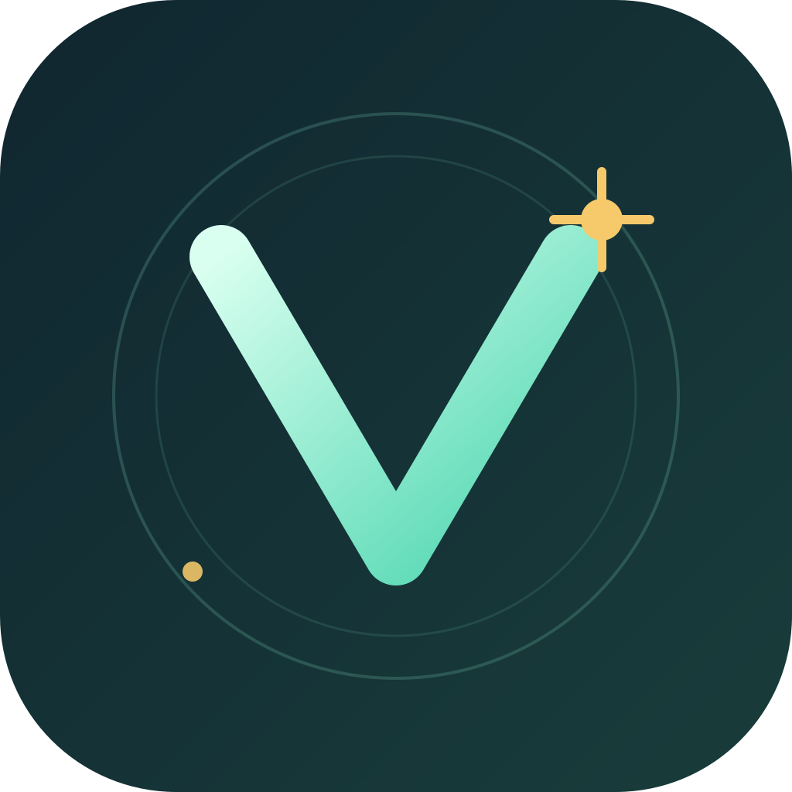

LLM · быстрый диалог
Ответы на вопросы, объяснения, тексты и помощь в повседневных задачах.

VEGA/AGI01 ИНТЕЛЛЕКТУАЛЬНАЯ СРЕДА / RU
Vega объединяет быстрый диалог с пошаговым разбором задач. Выбирай режим и проверяй идею прямо в терминале.
/help.03 ИНСТРУМЕНТАРИЙ
Два режима — один спокойный рабочий процесс. Без обещаний автономии: только понятные возможности и видимый статус.
Ответы на вопросы, объяснения, тексты и помощь в повседневных задачах.
Разбор цели на шаги, ограничения и риски. Экспериментальный формат, не автономный исполнитель.
Понятное состояние задачи, позиция ожидания и защита от частых повторных отправок.
04 ПОДКЛЮЧЕНИЕ
Эта страница показывает интерфейс и не отправляет запросы к GigaChat. Подключи Telegram-бота через BotFather, а ключи храни только в серверном `.env`.
Открыть инструкцию проекта